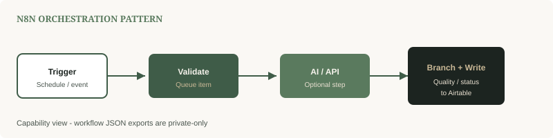
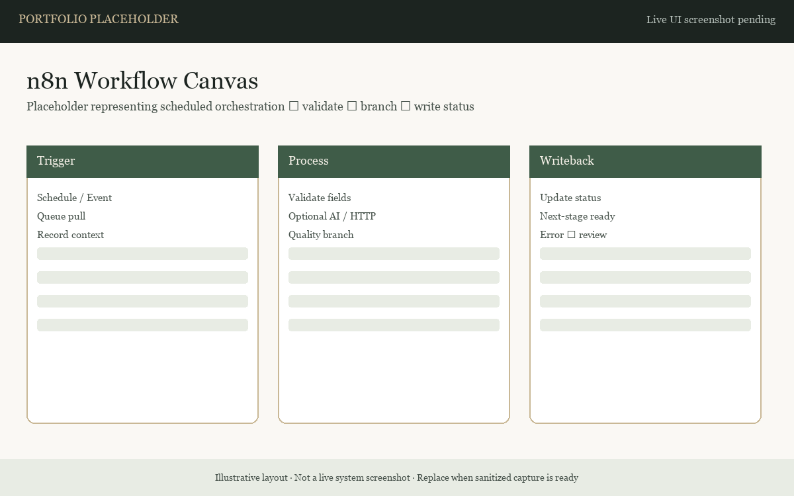
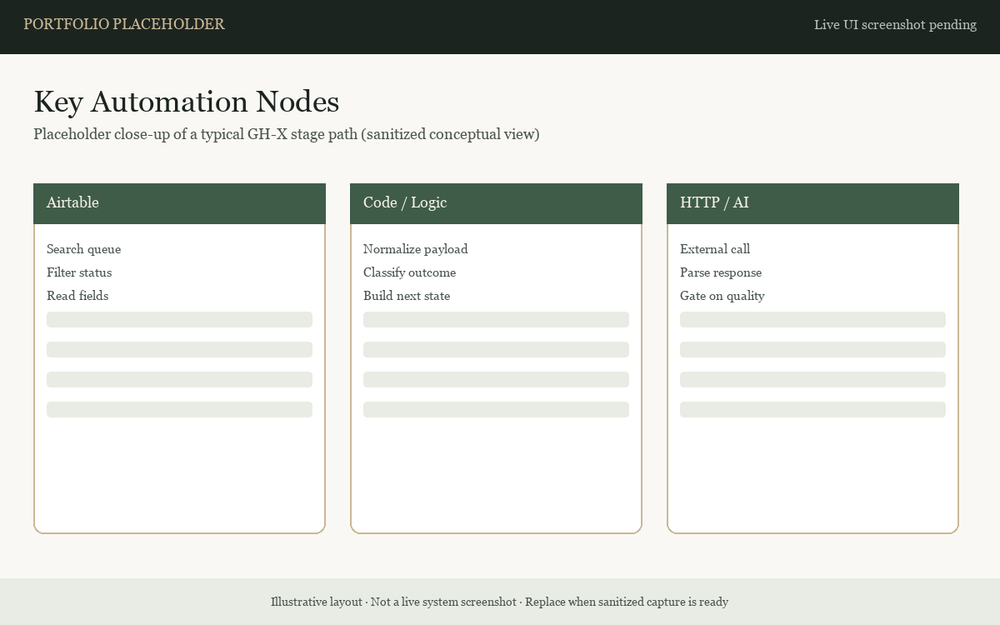

Projects / n8n
n8n Workflow Automation
Demonstrates scheduled orchestration, queue processing, branching, batching, HTTP API calls, and error-handling patterns used inside the GH-X system — without exposing importable workflow exports.
Functional Build
Capability overview
n8n is the orchestration layer for GH-X stage processing: pull a queue item, validate, optionally call AI or external APIs, branch on quality or status, then write results back to Airtable for the next stage.

High-level capability view. Workflow JSON exports are private-only.


Patterns practiced
- Schedule and event triggers
- Queue item validation before work
- Optional AI generation or HTTP API steps
- Quality / status branching
- Status writes to Airtable for downstream stages
- Error-handling and reliability mindset (alerts, requeue / review)
Relationship to GH-X
This page explains orchestration skill at a capability level. The full multi-stage product pipeline is documented on the GH-X project page. Individual workflow pages and JSON remain private.
Current status
- Functional Build definitions exist privately
- Public pack is sanitized narrative only
- Not claimed as proven production traffic